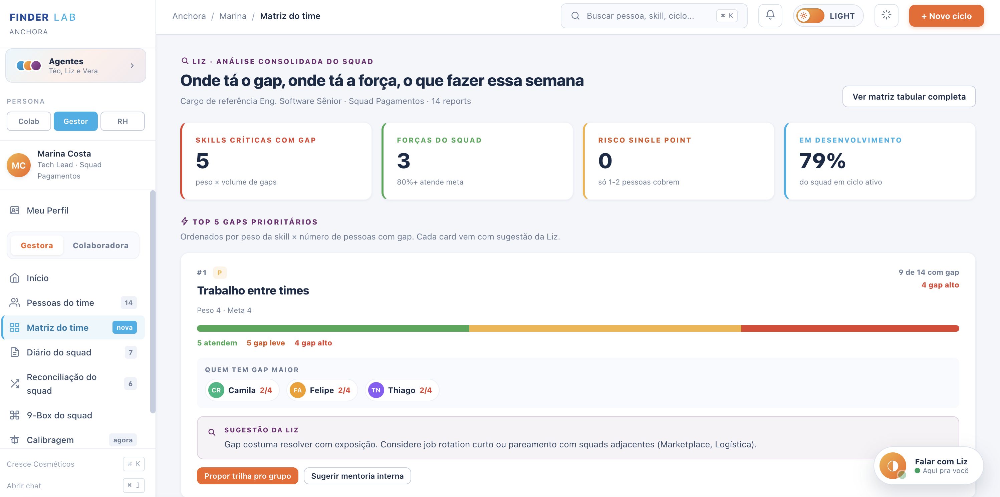
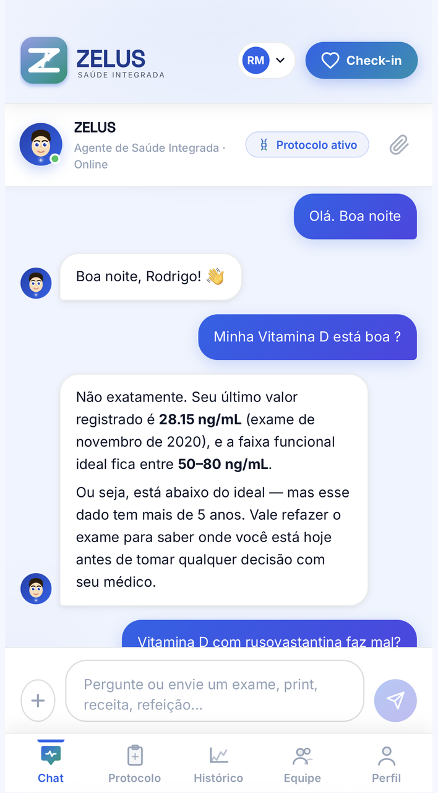
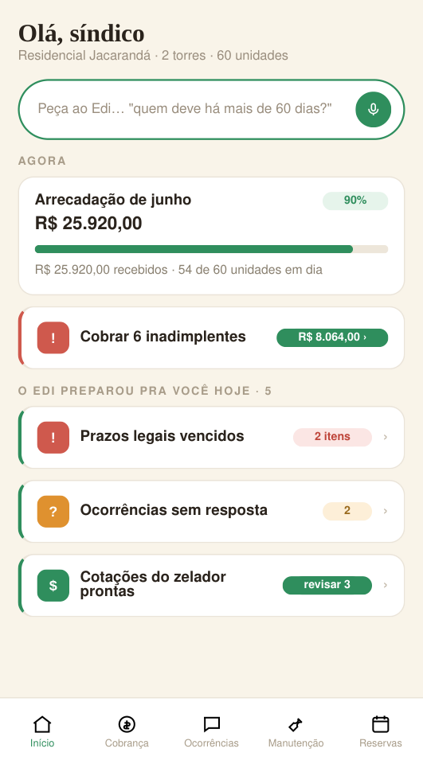
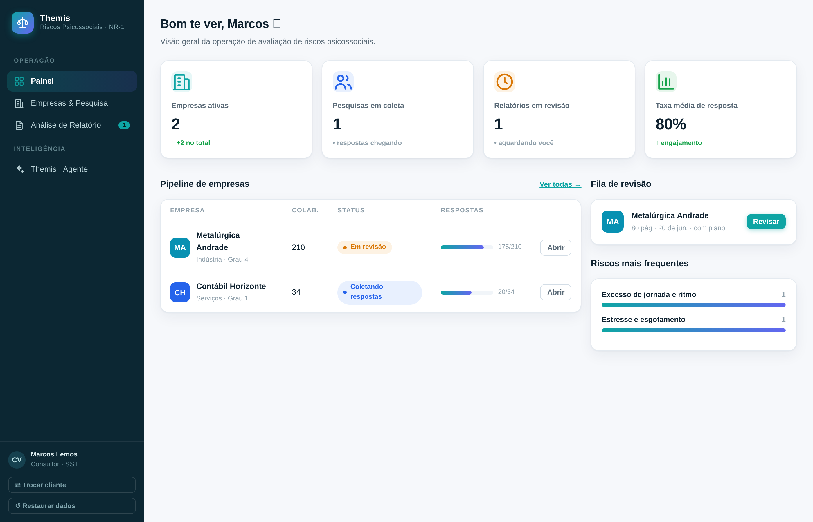
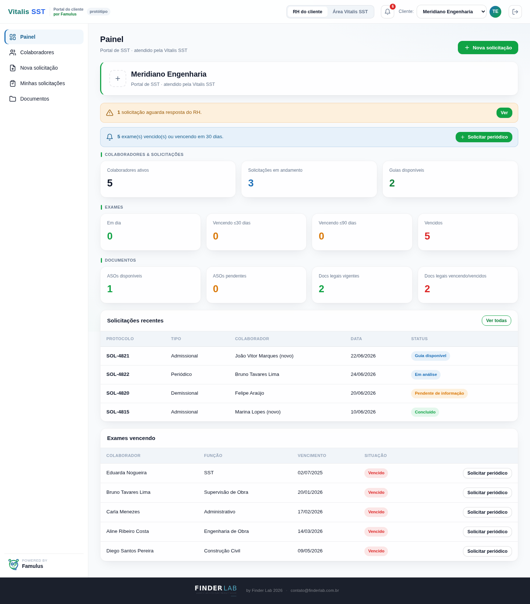

Anchora
Gestão de performance nativa da era dos agentes: avaliação ancorada em evidência, não em achismo.Performance management native to the age of agents: evaluation anchored in evidence, not guesswork.
- Agentes de Colaborador, Gestor e RHCollaborator, Manager and HR agents
- Ontologia de skills em grafoSkills ontology graph
- Método anti-alegoriaAnti-guesswork method

Zelus Health
Centraliza exames, sintomas, indicadores e histórico clínico, com IA contextual para apoio à decisão.Centralizes exams, symptoms, indicators and clinical history, with contextual AI for decision support.
- Acompanhamento longitudinal de marcadoresLongitudinal marker tracking
- Chat contextual com IAContextual AI chat
- Relatório para a consulta médicaReport for the medical visit

Zelus Pet
Plataforma multi-pet que lê e classifica marcadores laboratoriais por espécie.Multi-pet platform that reads and classifies lab markers by species.
- Classificação de exames por espécieExam classification by species
- Chat contextual com IAContextual AI chat
- Relatório pré-consulta ao vetPre-visit report to the vet

Viva
O sistema de gestão condominial que o síndico usa sozinho e a administradora oferece à carteira inteira.The condo management system the manager runs alone and the administrator offers to its whole portfolio.
- Cobrança, aviso e reserva por linkBilling, notices and bookings by link
- PIX nativo com conciliaçãoNative PIX with reconciliation
- Edi: a IA que cita a convençãoEdi: the AI that cites the bylaws

Themis
Ecossistema de agentes de IA que avalia riscos psicossociais e gera relatório e plano de ação no padrão do consultor.AI agent ecosystem that assesses psychosocial risk and produces the report and action plan in the consultant's standard.
- Cruza pesquisa, epidemiologia e medidas protetivasCross-references survey, epidemiology and protective measures
- Relatório e plano de ação 5W2HReport and 5W2H action plan
- Agente especialista na NR-1 com base legal citadaNR-1 specialist with cited legal basis

Famulus
O portal que tira a saúde ocupacional do e-mail: o cliente pede, acompanha suas vidas e documentos, e a operação de SST resolve num fluxo só.The portal that takes occupational health out of email: the client requests, tracks its workers and documents, and the SST operation resolves it in one flow.
- Portal do cliente ponta a pontaEnd-to-end client portal
- Vidas, ASOs e vencimentos visíveisWorkers, ASOs and due dates visible
- Auditor de ASO com IAAI-powered ASO auditor